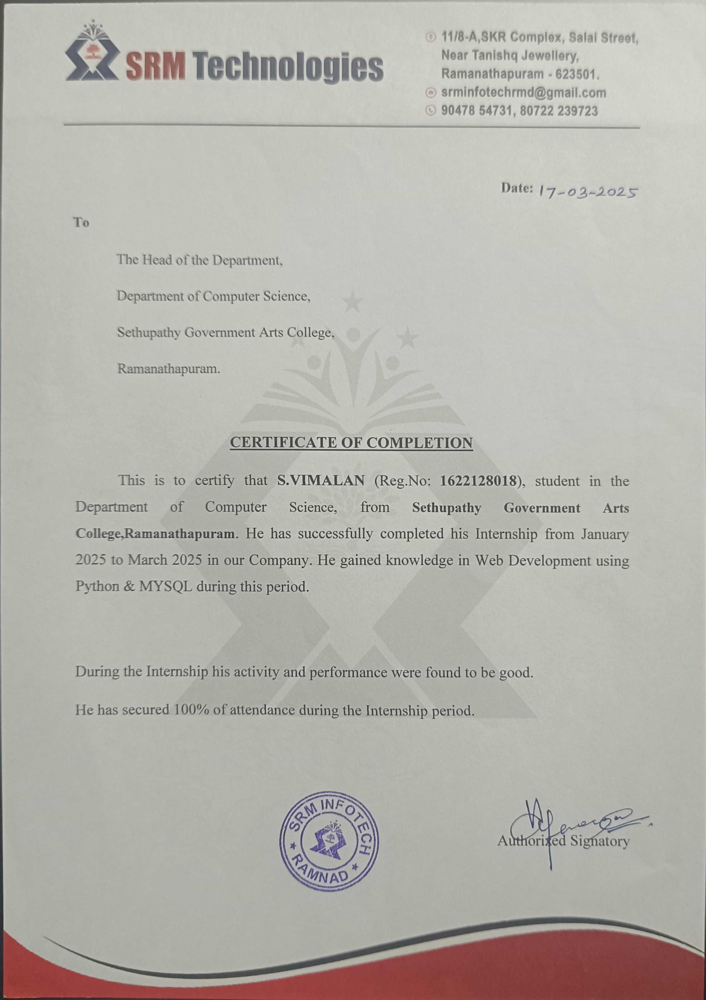

Certificate

I Successfully Completed a 3-Month University Internship (Dec 2024 – Mar 2025) as a Web Developer Intern at SRM Technologies, Ramanathapuram. During this internship, I gained strong foundational knowledge in HTML, CSS, and JavaScript, and learned how to build basic, responsive webpages using these technologies.
I successfully completed a 6-month Full Stack Developer Internship at Besant Technologies, Velachery, where I gained practical hands-on experience in both front-end and back-end development. During the internship period, I worked with core technologies such as HTML, CSS, JavaScript, ReactJS, Python, SQL, and Bootstrap, developing complete web applications from interface design to server-side logic.